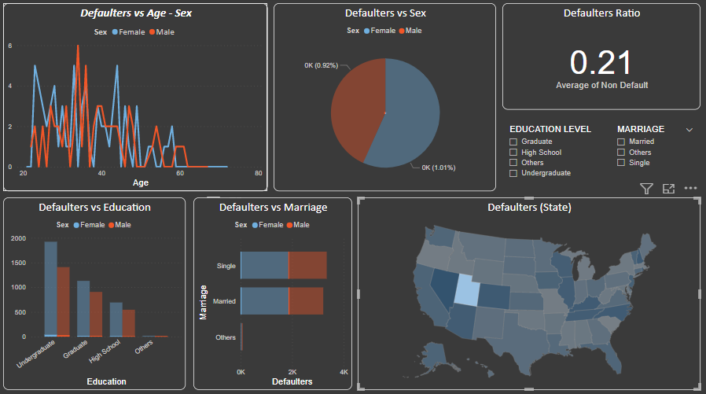

Pay On Time
Live life Debit Free
"Default risk is the risk that a lender takes on in the chance that a borrower will be unable to make the required payments on their debt obligation"
More info Start Prediction"Default risk is the risk that a lender takes on in the chance that a borrower will be unable to make the required payments on their debt obligation"
More info Start PredictionDefault Prediction is a web app which has a Machine Learning model running at the back. The purpose of developing this app is to predict whether the coustomer going to be default or not in the fiture . Because Financial threats are displaying a trend about the credit risk of commercil banks as the incredible improvement in the financial industry has arisen. In this way, One of the biggest threats faces by commorcial banks is the risk prediction of credit clients. The gole is to predict the probability of credit default based on creditcard owner's characteristics and there payment history . This model is based on the credit card clients in Taiwan from April 2005 to September 2005. The codes for this project can be checked in my github repo. we predict based on this model, that being Female, More educated, Single and between 30-40years old means a customer is more likely to make payments on time & remain coustomers are high chance to be default .
This dashboard is done using a software called PowerBI which is a product of Microsoft. Here I have just attached the images of the dashboard because PowerBI needs oraganizational account. So to see the visualizations interactive I am attaching my PowerBI dashboard file. This requires PowerBI software to open the file. The usage of dashboards like these is to bring a better understanding about the dataset and also to bring some beautiful insights

Hi, I'm Amrit, a Data Scientist 🚀 from India. Currently, I'm learning ML, DL, NLP & AI. I have an experience as a Data Science Intern from Ineuron for around three months. Now currently I am trying to do some self - paced projects in data science like Credit Defaulter, Smart Attendance System,J.A.R.V.I.S, etc.. I also have an experience of taking webinars in my college. I am also trying to do some projects for my college too. Always curious to learn something new in this field of Data Science. Beside's programming & I enjoy travling and reading books. Below I have given my social media links. Happy to have new connections.